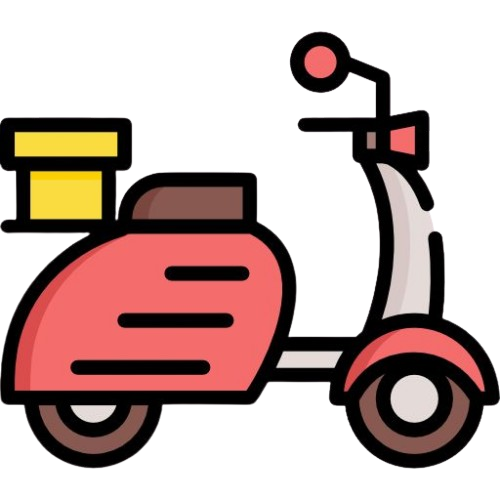

Featured Coffee of the Month:

"Colombian Supremo - September Special"
This month, we're highlighting our rich and smooth Colombian Supremo beans! Grown high in the Andean mountains, these beans are known for their well-balanced flavor, with notes of caramel, chocolate, and a hint of citrus. The medium body and mild acidity make it a versatile coffee that's perfect for any time of day. Whether you enjoy it as a strong espresso or a smooth pour-over, our Colombian Supremo will make every sip a treat.
Brewing Tips:
Make the most of your coffee with these brewing tips tailored to different methods:
-
Pour-Over:
- Grind: Medium-fine grind for a balanced extraction.
- Water Temp: 195°-205°F (90°-96°C).
- Ratio: Use 1g of coffee for every 16g of water for optimal flavor.
- Tip: Pour water slowly in circular motions to evenly saturate the grounds.
-
Espresso:
- Grind: Fine grind for a concentrated shot.
- Water Temp: 190°-195°F (88°-91°C).
- Ratio: Use 18g of coffee for a double shot (about 60ml).
- Tip: Tamp the coffee evenly to ensure even extraction and a rich crema.
-
French Press:
- Grind: Coarse grind for a smoother, less bitter taste.
- Water Temp: 200°F (93°C).
- Ratio: 1:15 coffee-to-water ratio for a rich brew.
- Tip: After 4 minutes of steeping, stir gently and press the plunger slowly to avoid over-extraction.

Free delivery across Ukraine on orders over 500 UAH!
Get 10% off on all drinks at our cafe. Use code: COFFEECATS10
Choose the coffee you would like to drink with your cat:
Chocolate and nutty from Brazil
Fruity and floral from Ethiopia
Smooth and sweet from Colombia